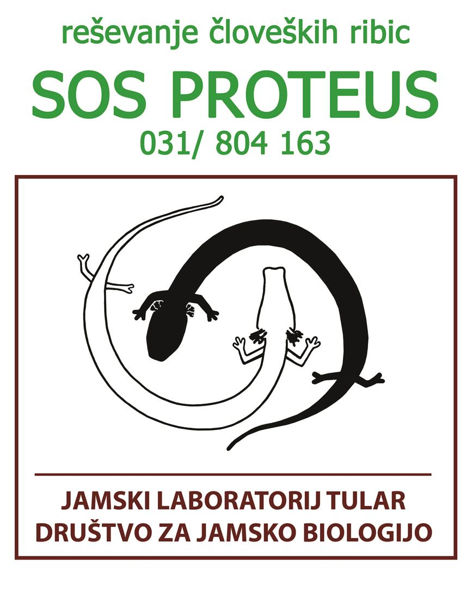

Tular Cave Laboratory
Society for Cave Biology
Oldhamska c. 8aSI-4000 Kranj
Slovenia info@tular.si
Gregor Aljančič
Head of the laboratory
gregor.aljancic@guest.arnes.si
Contact the laboratory, discuss research or report an olm in need of rescue.
Society for Cave Biology
Oldhamska c. 8aHead of the laboratory
gregor.aljancic@guest.arnes.si